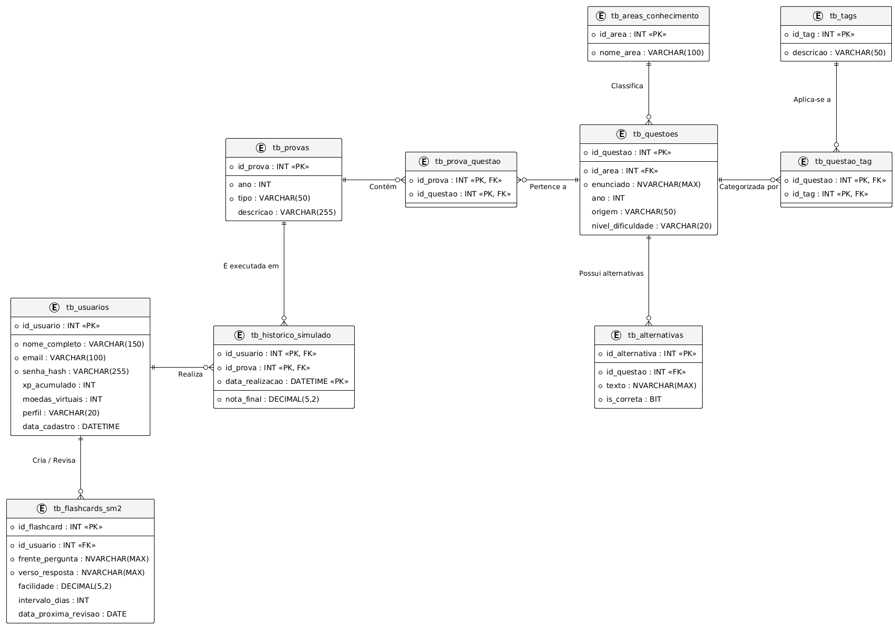

1 INTRODUÇÃO
A Nex_TI é uma solução educacional para apoiar estudantes ingressantes em Tecnologia da Informação no estudo de conceitos técnicos. Flashcards, revisão espaçada e gamificação compõem a proposta de apoio à aprendizagem. A redução da evasão e a melhoria da retenção são benefícios esperados, ainda dependentes de avaliação com estudantes.
Este relatório apresenta a evolução do projeto do PIM III para o PIM IV. O desenvolvimento está organizado nas nove etapas do manual disponibilizado à equipe, articulando negócio, responsabilidade social, Web, Mobile, arquitetura, banco de dados, infraestrutura e gestão ágil.
1.1 Objetivo geral
Desenvolver e documentar uma solução educacional com aplicação Web e aplicativo Mobile integrado, apoiada por uma API .NET e banco relacional. A versão examinada possui implementação Web e API, enquanto a integração Mobile permanece pendente.
1.2 Objetivos específicos
Caracterizar a organização e a viabilidade da solução; propor ações de diversidade e inclusão; documentar interfaces e serviços; explicitar a arquitetura e o modelo de dados; planejar infraestrutura e entregas ágeis; verificar a correspondência entre especificação e implementação.
1.3 Método e delimitação
A revisão documental de 21 de outubro de 2026 confrontou as dez imagens do Manual PIM IV enviadas à equipe com o código e os documentos locais. Implementado significa identificado no repositório, sem implicar homologação em produção. Proposto indica decisão de projeto ainda a validar; pendente indica requisito sem evidência suficiente. Não foram realizados pesquisa de mercado, estudo de impacto pedagógico ou auditoria de conformidade legal.
2.1 Etapa 1 – Caracterização da organização
2 DESENVOLVIMENTO
A Nex_TI Educacional é uma empresa fictícia do segmento de tecnologia educacional (EdTech), concebida para oferecer apoio ao nivelamento de conhecimentos em TI. O modelo de negócio proposto combina atendimento a estudantes (B2C) e parcerias com instituições de ensino (B2B).
| Dimensão | Caracterização |
|---|---|
| Produtos e serviços | Plataforma Web de flashcards, revisão espaçada, simulados e acompanhamento individual. Aplicativo Mobile e acompanhamento por tutores integram o escopo planejado. |
| Público-alvo | Ingressantes de cursos de TI e instituições que ofereçam ações de nivelamento. |
| Problemas identificados no projeto | Dificuldade inicial com termos técnicos, estudo pouco sistemático e ausência de acompanhamento contínuo da revisão. São hipóteses a validar com usuários. |
| Oportunidades | Organizar percursos de estudo, disponibilizar recursos acessíveis e permitir continuidade entre dispositivos. |
2.1.1 Estrutura organizacional proposta
Para a empresa fictícia, propõem-se quatro funções: gestão do produto e parcerias; curadoria pedagógica; desenvolvimento e operação tecnológica; atendimento e inclusão. Essas funções não representam cargos ou vínculos efetivos dos autores.
2.1.2 Principais processos
O processo pedagógico compreende selecionar conteúdos, revisar sua qualidade e publicar atividades. O aluno realiza cadastro, acessa a trilha, responde às atividades e acompanha o progresso. O processo de suporte recebe dúvidas e barreiras de acesso; a operação acompanha falhas, versões e proteção dos dados. Curadoria administrativa e suporte formal ainda precisam ser implementados.
2.2 Etapa 2 – Planejamento da solução tecnológica
Disciplina: Empreendedorismo em TI. A proposta de valor é reunir estudo ativo de fundamentos de TI, revisão espaçada e acompanhamento individual em uma experiência acessível. O recorte por conteúdo introdutório e a integração com ações de nivelamento institucional constituem diferenciais propostos, sem alegação de exclusividade no mercado.
A solução busca facilitar a criação de uma rotina de revisão e tornar o progresso visível. A efetividade será avaliada por conclusão de sessões, retorno ao estudo e desempenho em avaliações antes e depois do uso, com participação voluntária e tratamento adequado dos dados.
| Componente do negócio | Hipótese e forma de validação |
|---|---|
| Receita | Licenciamento institucional e oferta individual são alternativas propostas. Validar interesse e disposição de pagamento antes de definir preços. |
| Custos | Estimar hospedagem, banco, tráfego, suporte, manutenção e curadoria. A existência de opções gratuitas não demonstra custo operacional nulo. |
| Viabilidade técnica | Web, API e persistência relacional existentes sustentam o piloto; Mobile, perfis e sincronização limitam a entrega integrada. |
| Viabilidade econômica | Não demonstrada por dados financeiros. Calcular ponto de equilíbrio: custos fixos / (receita unitária − custo variável unitário), quando houver estimativas verificadas. |
| Riscos | Baixa adesão, custos de operação, inconsistência entre dispositivos e necessidade de revisão pedagógica. Mitigar com piloto limitado e critérios de aceite. |
2.2.1 Delimitação de escopo
A entrega atual contempla estudo Web, autenticação na API e recursos de progresso e gamificação. A autorização por papéis Aluno/Tutor/Admin, o painel gerencial e o CRUD completo de decks permanecem requisitos planejados. Recursos presentes na interface não devem ser descritos como transações integralmente controladas pelo servidor.
2.3 Etapa 3 – Responsabilidade social e diversidade
Disciplina: Relações étnico-raciais e afrodescendência. A proposta social da Nex_TI é ampliar o acesso ao estudo de fundamentos tecnológicos, considerando desigualdades de acesso, diversidade de trajetórias e barreiras de participação. Recursos de acessibilidade são parte dessa proposta, mas não substituem ações explícitas de combate à discriminação.
| Eixo | Ação proposta e evidência de aceite |
|---|---|
| Relações étnico-raciais | Revisar exemplos, imagens e enunciados para evitar estereótipos; incluir contribuições de profissionais negros e afrodescendentes com fontes verificáveis. Evidência: registro de curadoria e conteúdos revisados. |
| Combate à discriminação | Definir política de uso e canal de relato com responsável e fluxo de resposta. Evidência: política publicada e teste do atendimento; ainda pendentes. |
| Valorização da diversidade | Representar diferentes trajetórias e contextos sociais sem pressupor experiência prévia em TI. Evidência: revisão pedagógica e participação de público diverso no piloto. |
| Acessibilidade | Há recursos de contraste, redimensionamento e semântica assistiva no Web. Validar teclado, leitor de tela e compreensão das atividades; a presença de atributos ARIA não comprova conformidade integral. |
| Cidadania digital | Propor orientação sobre privacidade, segurança e uso responsável da tecnologia em linguagem acessível. Avaliar entendimento com participantes. |
Essas ações constituem um plano de responsabilidade social. Não há neste relatório comprovação de campanha executada, validação por comunidade participante ou medição de impacto social. A eventual oferta de LIBRAS deve ser verificada quanto à disponibilidade e à compreensão do conteúdo, além da simples inclusão de uma ferramenta.
2.4 Etapa 4 – Desenvolvimento da solução Web
Disciplina: Desenvolvimento Web com .NET. A aplicação utiliza React 18 e Vite no frontend e ASP.NET Core .NET 10 no backend. O navegador acessa serviços HTTP; a API utiliza Entity Framework Core para comunicação com SQL Server. HTML e CSS estruturam a interface, mas não descrevem sozinhos sua implementação.
O percurso Web compreende cadastro e login, acesso às trilhas, estudo de flashcards, acompanhamento de XP e moedas e simulados. Protótipos de Figma presentes no acervo documentam decisões anteriores de interface; não constituem capturas da aplicação atual.
2.4.1 Autenticação, segurança e administração
A API implementa autenticação JWT, hash BCrypt, política de senha e limitação de tentativas de login e cadastro. Rotas pessoais verificam a identidade do usuário. Essas verificações não equivalem à autorização por papéis: a separação funcional entre Aluno, Tutor e Administrador ainda necessita de implementação e testes.
A estrutura administrativa proposta inclui curadoria, manutenção de decks e acompanhamento de alunos. O endpoint de criação de flashcard exige autenticação, mas não demonstra um painel administrativo nem CRUD completo. A adequação à LGPD exige trabalho específico sobre finalidade, transparência, direitos dos titulares e operação; o hash de senha isoladamente não comprova conformidade.
2.4.2 Integração e limitações
A persistência é híbrida: o Web mantém estado local e usa a API para funcionalidades autenticadas. Desbloqueios de bônus e posições do mapa possuem dados locais. Uma sessão previamente salva pode permitir estudo local, mas cadastro e login dependem da API, e não há fila automática de reenvio das respostas que falharem. A economia virtual requer consolidação das regras no servidor para evitar divergências.
Evidências: dependências Web, rotas da API e manual técnico.
2.4.3 APIs REST e integração entre módulos
| Método e rota | Finalidade / controle |
|---|---|
| GET /api/status | Resposta de disponibilidade do processo; não testa a saúde do banco. |
| POST /api/auth/register; POST /api/auth/login | Cadastro e sessão; limitador de requisições. |
| GET /api/usuarios/{username} | Perfil do próprio usuário; JWT. |
| GET /api/fases; GET /api/fases/{codigoFase}/flashcards | Consulta de conteúdo. |
| POST /api/flashcards | Criação autenticada de cartão; sem distinção de papel. |
| GET /api/progresso/usuario | Progresso do usuário autenticado. |
| POST /api/progresso/atualizar | Registro da resposta e cálculo de revisão; JWT. |
| GET /api/usuarios/{username}/stats-detalhadas | Estatísticas pessoais; verifica titularidade. |
| PUT /api/usuarios/stats | Atualiza XP, moedas e nível; valores enviados pelo cliente. |
| GET /api/simulados/areas; GET /api/simulados/questoes | Consulta de áreas e questões. |
| GET /api/estatisticas/resumo | Resumo agregado disponibilizado pela API. |
O fluxo de revisão autenticado envia a identificação do cartão e a qualidade da resposta para o serviço de progresso. O servidor identifica o usuário pelo token, calcula o próximo intervalo e persiste o estado. As implementações do SM-2 no cliente e no servidor precisam de alinhamento antes de se afirmar equivalência de resultados entre plataformas.
2.5 Etapa 5 – Desenvolvimento da solução Mobile
Disciplina: Desenvolvimento Mobile. O repositório contém um protótipo em React Native/Expo com uma tela de estudo, quatro cartas demonstrativas e cálculo local de revisão, XP e moedas. O estado é mantido em memória e é perdido ao reiniciar o aplicativo.
| Exigência | Situação e entrega necessária |
|---|---|
| Telas principais | Existe tela demonstrativa de estudo. Implementar acesso, seleção de trilha e acompanhamento de progresso. |
| Fluxo de navegação | Proposto: acesso → trilhas → sessão de estudo → resultado → progresso. A navegação integrada ainda é pendente. |
| Autenticação | Pendente: consumir cadastro/login da API, tratar erros e expiração da sessão e definir armazenamento seguro do token. |
| Sincronização | Pendente: consultar progresso, enviar respostas e reconciliar estado após falha de rede. Não há sincronização implementada no protótipo. |
| Integração com APIs | Pendente: reutilizar os contratos da etapa Web e testar a continuidade do mesmo usuário entre dispositivos. |
2.5.1 Critérios de aceite propostos
Com a mesma conta, registrar uma resposta no Mobile e verificar seu progresso pela API e pelo Web; reiniciar o app sem perder dados persistidos; rejeitar acesso a dados de outra conta; apresentar erro compreensível durante indisponibilidade; impedir duplicação de respostas em tentativas de reenvio. Esses critérios descrevem testes futuros, não resultados já obtidos.
Evidências do estado atual: App.js e documentação do protótipo Mobile. A adaptação responsiva do Web não substitui esta entrega.
2.6 Etapa 6 – Arquitetura de Software
Disciplina: Programação Aplicada em .NET. A solução está organizada em aplicações e módulos com responsabilidades distintas. A integração Web → API → banco está representada no código; a ligação Mobile → API é a arquitetura-alvo, ainda não implementada.
| Camada / módulo | Responsabilidade |
|---|---|
| Apresentação Web e Mobile | React/Vite e React Native/Expo. Renderização, interação e estado de interface. |
| Endpoints | EndpointExtensions traduz requisições e resultados para HTTP e aplica controles de acesso. |
| Serviços | AuthService, ConteudoService, ProgressoService e GamificacaoService concentram operações do domínio. |
| Domínio e algoritmo | Entidades C# e motor SM-2 modelam usuários, conteúdo e revisão. O agendamento é algorítmico; não constitui modelo de aprendizado de máquina treinado. |
| Persistência | AppDbContext, mapeamentos, migrations e serviços de carga inicial acessam SQL Server via EF Core. |
| Conteúdo compartilhado | packages/shared reúne recursos reutilizáveis. A existência do pacote não implica que o protótipo Mobile já consuma todo esse conteúdo. |
2.6.1 Orientação a objetos e modularização
Interfaces de serviços permitem separar contratos de implementação; a injeção de dependências conecta serviços aos endpoints. Classes de entidades representam dados e relacionamentos. A modelagem conceitual de Aluno e Tutor não comprova autorização por papéis no sistema executável.
Os diagramas UML do acervo são mantidos nas páginas seguintes como modelagem conceitual. Devem ser reconciliados com endpoints, entidades e fluxos atuais antes de serem tratados como representação integral da implementação. IA para alertar tutores permanece possibilidade futura, sem componente implementado.
2.6.2 Casos de uso e escopo planejado
Os atores Tutor e Administrador expressam o escopo planejado. Os privilégios indicados não estão integralmente implementados.
2.6.2 Casos de uso e escopo planejado

Fonte: acervo do projeto Nex_TI, 2026.
2.6.3 Modelo conceitual de classes
A figura preserva a modelagem de domínio do acervo. A estrutura executável deve ser conferida nos Models, Services e AppDbContext da API.
2.6.3 Modelo conceitual de classes

Fonte: acervo do projeto Nex_TI, 2026.
2.6.4 Sequência conceitual das operações
A sequência representa a intenção de integração. Persistência local, falhas de rede e regras de recompensa ainda precisam ser conciliadas com o fluxo implementado.
2.6.4 Sequência conceitual das operações

Fonte: acervo do projeto Nex_TI, 2026.
2.7 Etapa 7 – Projeto do Banco de Dados
Disciplina: Programação de banco de dados. O banco implementado é SQL Server, com esquema versionado por migrations do Entity Framework Core. O modelo separa conteúdo compartilhado e progresso individual, evitando armazenar uma cópia do flashcard para cada aluno.
| Entidade física | Chaves e finalidade |
|---|---|
| usuarios | PK id; índices únicos de username e email; senha_hash, nivel, xp e moedas. |
| fases / flashcards | PK codigo_fase / id; FK flashcards.codigo_fase → fases; conteúdo das cartas. |
| progresso_flashcards | PK composta (usuario_id, flashcard_id); FKs para usuário e carta; repetições, intervalo, fator de facilidade e próxima revisão. |
| tb_areas_conhecimento / tb_questoes | PK id_area / id_questao; cada questão pertence a uma área. |
| tb_alternativas | PK id_alternativa; FK id_questao; texto e indicação de resposta correta. |
| tb_provas / tb_prova_questao | Provas e associação N:N entre prova e questão. |
2.7.1 Modelo lógico e físico
Um usuário possui vários registros de progresso; cada registro corresponde a um flashcard. Uma fase possui vários flashcards. Uma área reúne questões, cada questão possui alternativas e pode integrar várias provas. O esquema físico define tipos, chaves, índices e relacionamentos; o mapeamento está em AppDbContext.
O script completo do esquema atual acompanha o repositório: schema.sql. Ele representa a migration InicialAzureSql. O script NexTI_DB.sql é um artefato anterior e não deve ser usado como prova de equivalência ao banco atual. A carga de conteúdo é realizada por seeders da API.
2.7.2 MER/DER e rastreabilidade
O DER abaixo pertence ao acervo conceitual. A etapa exige reconciliá-lo com o modelo físico atual, especialmente a separação entre flashcards e progresso_flashcards e a nomenclatura usuarios. A figura não substitui essa validação.
DER do acervo conceitual Nex_TI

Fonte: acervo do projeto Nex_TI, 2026.
2.7.3 Procedures, triggers e validação do banco
O manual solicita procedures e triggers. O schema de migration examinado não contém essas rotinas; as operações atuais são executadas por serviços C# e EF Core. Assim, esse requisito permanece pendente de implementação e demonstração.
| Entrega proposta | Responsabilidade e aceite |
|---|---|
| Procedure de consulta de revisões | Definir contrato por usuário e data, revisar índices e demonstrar o resultado em uma base de teste. Avaliar a integração com o serviço antes de incorporá-la à API. |
| Trigger de auditoria | Definir evento, tabela de auditoria e política de retenção. Demonstrar captura de alteração e rollback; evitar registrar senhas, tokens ou dados desnecessários. |
| Script completo versionado | Incluir novas rotinas em migration e regenerar o script idempotente. Validar criação em banco vazio e atualização de banco existente. |
| Consistência e desempenho | Testar unicidade, FKs, isolamento de dados por usuário e plano de execução das consultas principais. Documentar resultados e limites. |
Essas rotinas são propostas para atender à exigência acadêmica e precisam de revisão técnica antes de execução. Não foram inseridas no banco por esta revisão documental. O uso de SQL Server e transações não garante, por si só, que toda operação de moedas ou recompensa esteja protegida contra inconsistência; isso depende da implementação dos fluxos.
2.8 Etapa 8 – Infraestrutura em Nuvem e DevOps
Disciplina: Cloud Computing e DevOps. O plano de implantação separa frontend na Vercel, API no Azure App Service e dados no Azure SQL. O repositório possui instruções e automação para essa topologia. A presença desses arquivos não comprova disponibilidade, configuração ou homologação do ambiente remoto.
| Item exigido | Plano e evidência |
|---|---|
| Arquitetura e serviços | Navegador → Vercel → API no App Service → Azure SQL. Conexão com o banco restrita à camada de servidor. |
| Containers | Não foi identificado Dockerfile na revisão. Proposta: empacotar API em imagem com etapas de build/runtime, configuração externa e usuário sem privilégios. Exige implementação e teste. |
| Pipeline CI/CD | api-azure.yml executa testes .NET, publica o artefato e faz deploy no App Service. Depende de variável e segredo configurados no GitHub. |
| Monitoramento | Proposta: logs estruturados, métricas de erro/latência e alertas. /api/status responde pelo processo, mas não verifica conectividade do banco. |
| Escalabilidade | Avaliar volume de usuários, latência e consumo; medir carga antes de dimensionar planos e instâncias. Não há resultado de teste de carga apresentado. |
| Segurança | Configurar HTTPS, origens CORS, segredos externos, acesso mínimo ao banco e recuperação de dados. Verificar configuração efetiva na homologação. |
Evidências: workflow da API e roteiro de implantação. Custos, cotas e condições comerciais devem ser confirmados no momento de provisionar; não se presume gratuidade permanente.
2.8.1 Plano de execução e operação
| Passo | Resultado verificável |
|---|---|
| 1. Preparar ambiente | Definir responsáveis, variáveis e segredos fora do código; registrar ambiente e versão. |
| 2. Preparar dados | Aplicar migrations em homologação, executar seed e testar recuperação de backup antes de alterar produção. |
| 3. Validar build | Executar testes da API e do frontend, verificar consistência da semente e gerar artefatos da versão. |
| 4. Publicar em homologação | Configurar URL da API e CORS; testar cadastro, login, consulta de conteúdo e persistência. |
| 5. Validar falhas | Testar token inválido, tentativa de acesso a outra conta, indisponibilidade e retorno do banco. |
| 6. Liberar e observar | Registrar execução do pipeline, revisão da equipe, métricas iniciais e procedimento de retorno à versão anterior. |
O workflow existente automatiza parte desse processo. Monitoramento, containers, recuperação e critérios de liberação são planejamento complementar, ainda sem evidência de execução neste relatório. O retorno de versão deve considerar compatibilidade de schema; restaurar apenas o executável pode ser insuficiente após uma migration.
2.9 Etapa 9 – Gerenciamento Ágil do Projeto
Disciplina: Gerenciamento de Projetos Ágil. O planejamento usa Product Backlog, Sprint Backlog, acompanhamento visual e definição de entregas. O quadro informado pela equipe é PIM IV no Trello. As capturas locais de Kanban correspondem ao PIM III e permanecem apenas como histórico; não comprovam o andamento deste semestre.
2.9.1 Product Backlog de adequação proposto
A lista abaixo deriva desta revisão. Os identificadores DOC não substituem os IDs do Trello nem representam aprovação ou alteração do quadro.
| ID / prioridade | Entrega e critério de aceite |
|---|---|
| DOC-01 / Alta | Mobile: autenticação, navegação e progresso persistido; demonstrar continuidade com Web. |
| DOC-02 / Alta | Banco: MER atualizado, procedures, triggers e script versionado testado. |
| DOC-03 / Alta | Gestão: exportar backlog atual, metas, datas e entregas das sprints do PIM IV. |
| DOC-04 / Alta | Web e arquitetura: definir escopo administrativo, autorização e limites da sincronização. |
| DOC-05 / Média | Inclusão: revisar conteúdo étnico-racial, definir política e validar acessibilidade com participantes. |
| DOC-06 / Média | Cloud/DevOps: executar plano em homologação, registrar pipeline, operação e proposta de containers. |
| DOC-07 / Média | Negócio: validar público, custos, receita e critérios do piloto. |
O Scrum Master deve facilitar o acompanhamento de impedimentos e a atualização das evidências. A atribuição nominal de papéis e responsáveis depende de confirmação da equipe; este relatório não cria nomeações.
2.9.2 Sprint Backlog, cronograma e entregas
Como não há neste relatório uma exportação validada do planejamento atual, apresenta-se uma sequência proposta de três sprints de duas semanas. As datas, a capacidade e os responsáveis devem ser acordados pela equipe; o cronograma abaixo não é registro de sprints realizadas.
| Sprint proposta | Meta / itens | Entrega |
|---|---|---|
| A — semanas 1 e 2 | Consolidar DOC-03 e DOC-04; detalhar tarefas de Mobile e banco. | Backlog priorizado, escopo validado e critérios de aceite. |
| B — semanas 3 e 4 | DOC-01 e DOC-02, conforme capacidade; tratar dependências descobertas. | Incremento Mobile integrado e banco validado em homologação. |
| C — semanas 5 e 6 | DOC-05, DOC-06 e DOC-07; consolidar evidências das nove etapas. | Demonstração integrada, plano de operação e relatório revisado. |
2.9.3 Sprint Backlog inicial proposto
Para a sprint A: confrontar cartões com requisitos do manual; atribuir responsável e estimativa; registrar impedimentos; definir contratos de autenticação e progresso do Mobile; comparar DER e migration; selecionar critérios de autorização; definir evidências de aceite. Os itens não concluídos devem retornar ao planejamento com justificativa.
2.9.4 Quadro Kanban e definição de concluído
O fluxo proposto é Backlog → Selecionado para sprint → Em andamento → Revisão/Teste → Concluído. Um item só deve ser concluído quando houver artefato revisado, teste ou demonstração pertinente e vínculo com o requisito. Atualização documental não encerra implementação pendente. A versão final deve incluir captura datada ou exportação do quadro real e cronograma aprovado.
3 CONCLUSÃO
A revisão reorganiza a documentação da Nex_TI segundo as nove etapas do manual do PIM IV. A organização fictícia, a proposta de solução, as ações de responsabilidade social, a arquitetura, o banco de dados e os planos de operação e gestão passam a ter escopo e evidências explícitos.
O repositório demonstra uma aplicação Web em React, API .NET e persistência relacional, além de um protótipo Mobile. A documentação reconhece a persistência híbrida e separa os recursos executáveis das intenções de modelagem. Os resultados não permitem afirmar integração completa entre plataformas, eficácia pedagógica medida ou validação integral em produção.
Para concluir a entrega prática e documental, permanecem necessários: integração Mobile; definição e implementação do escopo administrativo; alinhamento do MER ao schema e entrega de procedures/triggers; evidências atuais de gestão; execução e registro do plano de infraestrutura; validação das ações de inclusão e da viabilidade econômica. A conclusão de cada requisito deverá ser apoiada por evidências verificáveis.
REFERÊNCIAS
UNIVERSIDADE PAULISTA. Manual PIM IV – ADS. Trechos disponibilizados à equipe em dez imagens, pasta MACIEL, arquivos datados de 19 out. 2026. A versão integral e seus dados bibliográficos devem ser conferidos na entrega final.
EQUIPE NEX_TI. Repositório PIM_IV: código e documentação técnica. Revisão local em 21 out. 2026. As referências do PIM III abaixo documentam o histórico do projeto.
ANKI. Powerful, intelligent flashcards, 2026. Disponível em: <ankiweb.net>.
BRASIL. Lei Geral de Proteção de Dados (LGPD), 2018. Disponível em: <planalto.gov.br>.
ELMASRI, R.; NAVATHE, S. Sistemas de Banco de Dados. 6. ed. Pearson, 2011. Disponível em: <books.google.com>.
FOWLER, Martin. UML Essencial. 3. ed. Bookman, 2014. Disponível em: <books.google.com>.
ISO/IEC. ISO/IEC 25010 (Quality Requirements), 2011. Disponível em: <iso.org>.
KRUG, Steve. Não Me Faça Pensar. 3. ed. Alta Books, 2014. Disponível em: <books.google.com>.
PRESSMAN, R.; MAXIM, B. Engenharia de Software. 8. ed. AMGH, 2016. Disponível em: <books.google.com>.
SILVA, M. D. I. et al. PIM III - Nex_TI (Documentação UML). GitHub, 2026. Disponível em: <github.com>.
SILVA, M. D. I. et al. PIM III - Nex_TI (Parte Teórica). GitHub, 2026. Disponível em: <github.com>.
SCHWABER, K.; SUTHERLAND, J. The Scrum Guide, 2020. Disponível em: <scrumguides.org>.
SOFTEX. MPS.BR - Guia Geral, 2021. Disponível em: <softex.br>.
SOMMERVILLE, Ian. Engenharia de Software. 10. ed. Pearson, 2019. Disponível em: <books.google.com>.
APÊNDICE A – REGISTROS HISTÓRICOS
As imagens seguintes pertencem ao quadro Kanban do PIM III. São mantidas para documentar a origem do projeto e não constituem evidência das sprints ou entregas atuais do PIM IV.
Kanban histórico do PIM III — planejamento

Fonte: acervo do projeto Nex_TI, 2026.
Kanban histórico do PIM III — execução

Fonte: acervo do projeto Nex_TI, 2026.
FICHA DE CONTROLE — ACERVO HISTÓRICO
Grupo Nº: 02 Ano: 2026 Período: Diurno
Tema: Desenvolvimento de plataforma web de avaliação e apoio à aprendizagem
Alunos:
| RA | Nome | Visto do aluno |
|---|---|---|
| H67HJI4 | Gabriel Alves Moreira | |
| R280985 | Maciel Costa da Silva | |
| H719CD3 | Maycon Douglas Inácio Silva | |
| H7858F9 | Miguel Angel Fernandez Ortiz | |
| H6722I0 | Rafael Mesquita |
Os registros de março a maio abaixo foram preservados do relatório anterior. As datas e descrições não foram revalidadas e não devem ser apresentadas como atas do PIM IV. Inserir a ficha atual validada pela equipe antes da entrega.
Registros históricos:
| Data do encontro | Observações |
|---|---|
| 05/03 | 1ª Reunião: Leitura do Manual do PIM e definição técnica. |
| 12/03 | 2ª Reunião: Criação do Backlog, C# e SQL. |
| 18/03 | 3ª Reunião: UX/UI e WAI-ARIA. |
| 22/03 | 4ª Reunião: Alinhamento final da prototipagem e ABNT. |
| 26/03 | 5ª Reunião: Injeção do C# e estruturação final. |
| 29/03 | 6ª Reunião: Finalização e integração dos diagramas UML. |
| 05/04 | 7ª Reunião: Integração dos protótipos WEB. |
| 17/04 | 8ª Reunião: Reformulação do DER e Script SQL Server. |
| 03/05 | 9ª Reunião: Alinhamento de manuais de extensão e física do Mapa Neural. |
| 24/05 | 10ª Reunião: Refatoração SOLID da API backend em C#. |
APÊNDICE B – PROTÓTIPOS DO ACERVO
Protótipos anteriores de Login, Cadastro e Nivelamento, preservados como histórico de design. Não são telas Mobile nem evidência visual da aplicação React atual.
Protótipo de Login

Fonte: acervo do projeto Nex_TI, 2026.
Protótipo de Cadastro

Fonte: acervo do projeto Nex_TI, 2026.
Protótipo de nivelamento
Protótipo de Nivelamento

Fonte: acervo do projeto Nex_TI, 2026.